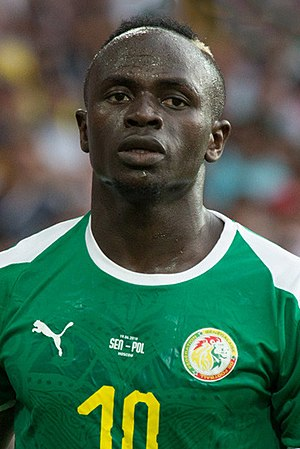

Sadio Mané er Senegalskur atvinnumaður í fótbolta sem leikur sem kantmaður hjá Liverpool ensku úrvalsdeildarliðinu Liverpool. Hann er víða talinn einn besti leikmaður heims. Hann hefur spilað fyrir nokkur lið um allan heim t.d. Red bull Salzburg, Southampton og núna er hann samningsbundinn við Liverpool. Hann vann meistaradeildina með þeim 1. Júní 2019 og er á góðri leið að vinna ensku úrvalsdeildina þetta tímabil
 Mané hefur spilað 69 landsleiki og skorað 19 mörk. Hann er í lykilhlutverki bæði í landsliði Senegala og einnig hjá Liverpool. Hjá Liverpool er hann kominn með 56 mörk í 114 leikjum. Hann er 27 ára að verða 28 ára og er á besta aldri í fótboltanum. Hann vann leikmaður ársins í Afríku 2019 og gæti átt 3-4 frábær tímabil í viðbót ef hann nær að forðast meiðlsi.
Sadio Mané er með samning til 2023 en Liverpool vill ólmir halda honum og hefur verið talað um að hann fái nýjan samning eftir tímabilið til 2025 og fær rosalega launahækkun. Ef allt gengur vel hjá Liverpool og þeir halda áfram að vinna bikara eru góðar líkur að hann verði áfram hjá Liverpool.